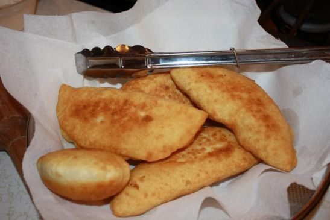

Aloo Pie Recipe
Home

Aloo pie is fried dough filled with savory mashed potatoes that’s seasoned simply with bandhania (culantro), cumin, onion and garlic. This snack (or meal) is right up there in popularity with doubles, saheena, pholourie,dhal pholourie, kachori and bake and shark.
Ingredients
To Knead Dough
- 3 cups all-purpose flour
- 2 teaspoons baking powder
- ½ teaspoons salt Himalayan
- 2 teaspoons brown sugar
- About 1 cup plus 1 tablespoon lukewarm water
- 1 tablespoon oil for rubbing on dough, optional or butter
- ½ teaspoon instant yeast optional
To Make Potato Filling
- 2 pounds potato
- 5 bandhania leaves aka culantro, recao leaves
- 1 onion small, finely chopped
- 3 cloves garlic minced
- 1 teaspoon roasted ground cumin geera
- 1 teaspoon Himalayan salt
- Hot pepper bird pepper, habanero or scotch bonnet pepper
- Pimento pepper Caribbean seasoning pepper, optional
- **If bandhania is unavailable substitute with 2 scallions(green parts)
Steps
- Knead flour:--In a bowl mix flour, salt and baking powder. Gradually add water and knead flour to form a soft, smooth dough. The key to a soft dough is not folding over the flour too often. Cover with a towel and let it rest until you are ready to use it.
- Cook potatoes: Peel and wash potatoes. Place 8 cups of water in a saucepan over high heat. Add potatoes(and salt which is optional), bring to a boil. Lower heat to medium and cook for 30-40 minutes or until fork tender but not overcooked. Drain, place in a large bowl and set aside.
- While the potatoes are boiling, mince garlic, bandhania (if using) and hot pepper (if using) using a food processor or mortar and pestle. Peel and finely chop onions(I add this to the food processor as well).
- Add the minced ingredients, salt and cumin to the bowl with the potatoes. Mash with a fork, breaking up all chunks. (I like to add some more chopped bandhania and hot peppers).
- Using your strong hand, squeeze off pieces of flour between thumb and forefinger to make 12 little balls. (I make three large loyahs(balls) and then divide each into 4). This way you don’t have to reshape after separating the dough.
- Lightly flour surface. Using your fingers, flatten each ball into a 4 inch disc. Place a handful of potato (about 3 heaping tablespoons) mixture and bring the sides up over the filling. Pinch the edges together to seal all the way around. Then fold over the edges(see no 5 below).
- Place upright and press the dough gently to flatten while pulling apart to lengthen. Place flat on the counter and then press gently with the palm of your hand to flatten. Place the completed filled dough on a floured surface and cover with towel.
- Repeat steps 2 and 3 with the remaining balls of dough.
- Heat about 1-2 cups of oil (use more if your pot is wider) in a small dutch oven or heavy bottomed pot. Add a small pinch of dough. The oil is ready when it floats and darkens. Gently place filled dough into the hot oil, two at a time if the pot is big enough.
- Using a spoon(for God's sake and yours), continuously pour hot oil over the dough. When the bottom is golden brown, flip and cook the other side until golden brown also. Drain on the side of the pot and place in a single layer, on a paper towel lined platter. Cover with a paper towel, then a kitchen towel.